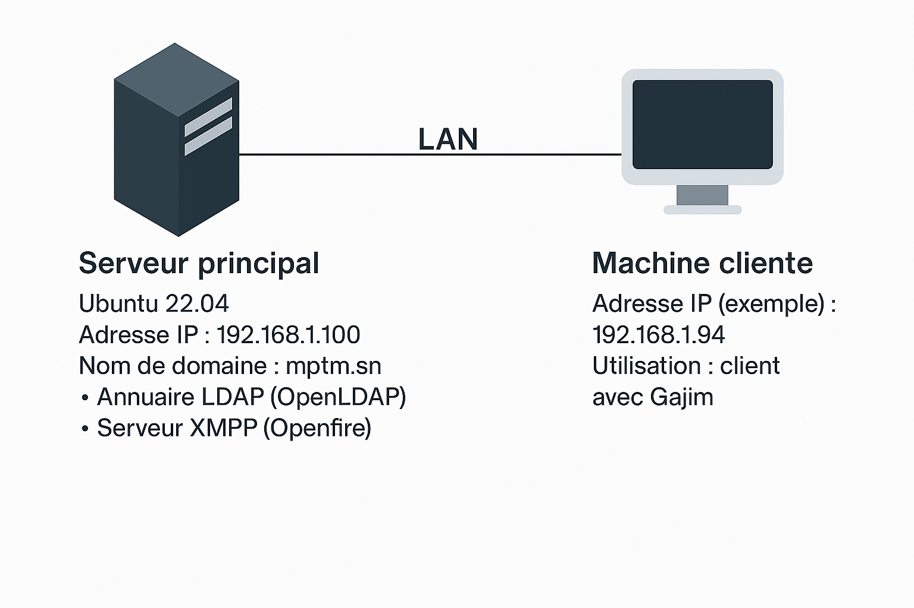
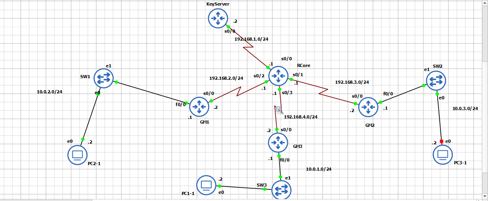
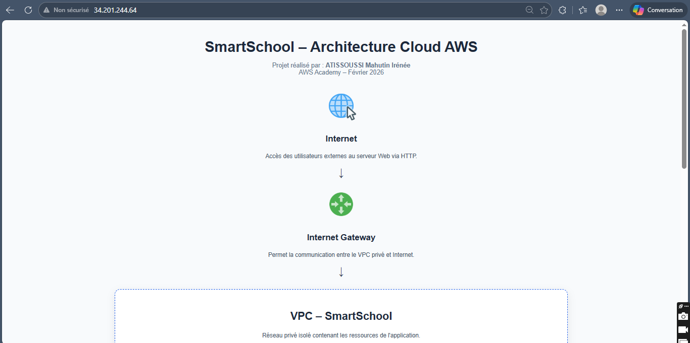

Réseaux IP & Services
Adressage IPv4, DHCP, DHCP Relay, routage et services client/serveur.
Ingénieur Réseaux & Télécommunications, diplômé d’un Master en Télécommunications & Multimédia, orienté infrastructures IP, systèmes, sécurité et architectures télécoms modernes.
Je conçois, configure et teste des environnements réseaux et télécoms à travers des projets pratiques : services réseau, routage, MPLS, sécurité, VoIP/ToIP, QoS, cloud, streaming et environnements Linux. J’ai également effectué un stage à l’ASECNA au sein de la DTI/CNS - cellule Communication.
Ingénieur Réseaux & Télécommunications, diplômé d’un Master en Télécommunications & Multimédia, je développe mes compétences autour des réseaux IP, des systèmes Linux, des services réseau, de la sécurité, du cloud et des architectures télécoms modernes.
Mon approche est principalement pratique : je construis des maquettes, configure des équipements et services, réalise des tests de connectivité, analyse les flux et documente les résultats obtenus.
De juin 2026 à octobre 2026, j’ai effectué un stage à l’ASECNA, au sein de la Direction Technique et Informatique (DTI), dans le domaine CNS - Communication, Navigation et Surveillance, au niveau de la cellule Communication.
Mes projets couvrent notamment la messagerie XMPP avec Openfire et OpenLDAP, le DHCP et DHCP Relay, les architectures MPLS, la sécurité VoIP, GETVPN, le cloud AWS, le streaming HLS ainsi que la VoIP/ToIP et la QoS des flux RTP.
Compétences issues des projets réalisés durant mon parcours en Réseaux, Télécommunications et Multimédia.
Adressage IPv4, DHCP, DHCP Relay, routage et services client/serveur.
Backbone opérateur, routage dynamique, VPN L3 et interconnexion multi-sites.
Administration Ubuntu et déploiement de services réseau applicatifs.
Détection, analyse et réaction face aux attaques réseau et SIP.
Sécurisation des communications inter-sites avec GETVPN et IPsec.
Construction d’une architecture AWS segmentée pour une application web.
Génération, diffusion et analyse réseau d’un flux vidéo HLS adaptatif.
Configuration de services téléphoniques IP, analyse RTP, codecs, QoS et interopérabilité multi-protocoles.
Huit projets sélectionnés et documentés, classés par domaine. Cliquez sur un projet pour consulter l’architecture, les étapes, les technologies et les résultats.

Services RéseauxMessagerie XMPP sous Ubuntu avec gestion centralisée des utilisateurs via LDAP.
 Services Réseaux
Services Réseaux
Attribution dynamique d’adresses IP à travers plusieurs sous-réseaux via un relais DHCP.
 MPLS / Routage
MPLS / Routage
Interconnexion d’un siège et de deux agences via un backbone IP/MPLS, VPN L3, MP-BGP et NAT.
 Sécurité VoIP
Sécurité VoIP
Simulation d’attaques SIP sur Asterisk, détection Wazuh, blocage Fail2ban et visualisation Grafana.

Sécurité RéseauChiffrement de groupe pour un réseau multi-sites sans tunnels IPsec point-à-point.

AWS CloudVPC segmentée avec subnet public/privé, serveur web EC2, base RDS privée et contrôle d’accès.
 Streaming HLS
Streaming HLS
Encodage multi-bitrate, segmentation HLS, lecture réseau et analyse des échanges HTTP avec Wireshark.
 VoIP / ToIP / QoS
VoIP / ToIP / QoS
Mise en œuvre de services ToIP avancés, analyse de la QoS des flux RTP et interconnexion de serveurs Asterisk avec un routeur Cisco et plusieurs protocoles de signalisation.
Un parcours construit autour des réseaux, des télécommunications et de la mise en pratique sur des environnements techniques réels.
Diplôme obtenu en 2024
Formation scientifique combinant mathématiques, informatique et méthodes d’analyse appliquées.
École Supérieure Multinationale des Télécommunications (ESMT)
Diplôme obtenu et soutenu. Formation orientée réseaux IP, télécommunications, services réseau, sécurité, cloud, multimédia, VoIP/ToIP, QoS et réseaux IP.
Direction Technique et Informatique (DTI) - CNS : Communication, Navigation et Surveillance - Cellule Communication
Stage réalisé au sein de la Direction Technique et Informatique (DTI), dans le domaine CNS (Communication, Navigation et Surveillance), plus particulièrement au niveau de la cellule Communication.